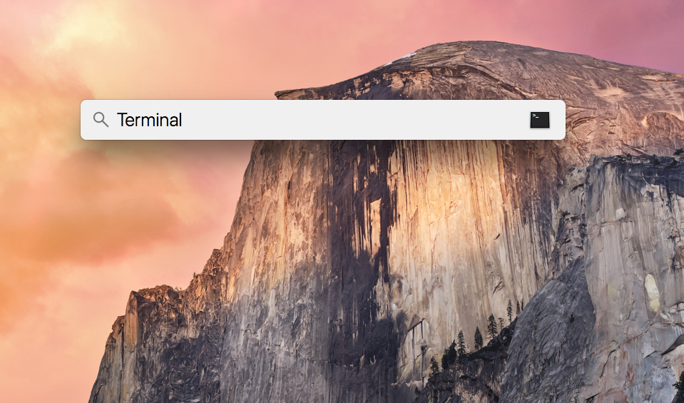
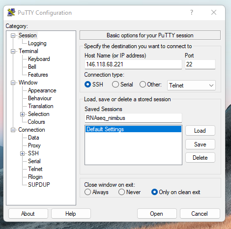
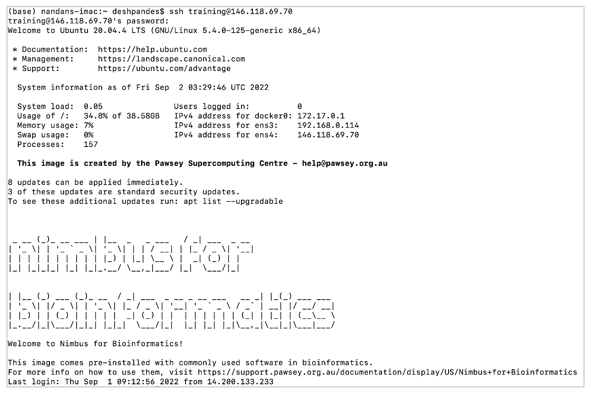

Setup
Questions
- How do I securely log into a Nimbus VM instance?
Objectives
- Successfully log in to a Nimbus instance using ssh.
In this workshop series, we will be using Pawsey’s Nimbus cloud. You will need a terminal application to access your Nimbus instance and web browser to run all the exercises and visualise the outputs. Instructions on how to download and set up your terminal and which browser to use are below.
1. Get a shell terminal emulator
2. Download the right web browser
Bioinformatics with Nimbus
The Pawsey Supercomputing Research Centre is one of two, Tier-1, High Performance Computing facilities in Australia, whose primary function is to accelerate scientific research for the benefit of the nation. Pawsey service and expertise in supercomputing, data, cloud services and visualisation, enables research across a spread of domains including astronomy, life sciences, medicine, energy, resources and artificial intelligence.
Pawsey’s Nimbus cloud is a useful solution for bioinformatics applications that may not be suitable for large-scale HPC machines including:
- Developing and refining scalable workflows in prepration for HPC allocation applications.
- Workflows with long runtimes that excede wall time queue limits on HPC facilities.
- Complex data-bound workflows with variable compute resource profiles that are common in bioinformatics pipelines.
Connecting to a Nimbus instance
- Loggin into a Nimbus instance requires three things:
- The YOUR ASSIGNED IP address (virtual address) of your instance. It is a series of numbers i.e. ###.###.###.###. Every participant is provided with an separate IP Address which points to an independant VM instance.
- Your login name: this depends on the name of the Linux OS image you selected and in our case it is
training. - Your password. Every participant is provided with a password
Get a shell terminal emulator
To connect to your Nimbus instance, and follow this lesson, you will need a ‘terminal emulator’ program installed on your computer. Often just called a ‘terminal’, or ‘shell terminal’, ‘shell client’, terminal emulators give you a window with a command line interface through which you can send commands to be executed by your computer.
More precisely, these commands are executed by your shell, which is a program designed to do just that: execute commands! The most commonly used shell is ‘Bash’, and we’ll generally refer to the shell as a ‘Bash shell’, and to scripts as ‘Bash scripts’. There are other shells, and each has its own set of extra commands or syntaxes it can accept – its own scripting language.
You don’t need to worry too much about this! You just need a shell – almost all will understand the commands we’re going to be using.
A. Linux systems
If you use Linux, then chances are you already know your shell and how to use it. Basically, just open your preferred terminal program and off you go! An X-Window server (X11) may also be useful if you want to be able to use GUIs; again, if you’re using Linux you probably have one, and if you don’t have one, it’s probably because you intentionally disabled it!
B. OSX (Mac computers and laptops)
Mac operating systems come with a terminal program, called Terminal. Just look for it in your Applications folder, or hit Command-Space and type ‘terminal’. You may find that other, 3rd party terminal programs are more user-friendly and powerful – I use Iterm2.

We also recommend installing XQuartz, which will replace OSX’s native X-Window server. XQuartz has some extra features that may offer better performance when using GUI programs. You’ll need to log out and back in again after installing XQuartz in order for it to activate.
C. Windows
If you’re using a Windows machine, don’t panic! You might not have used ‘CMD’ since Windows 95 but, rest assured, Windows still has a couple of terminal programs and shells buried in the Programs menu. However, those aren’t going to work for us, as you’ll need extra programs and utilities to connect to Nimbus, such as an SSH implementation.
- To use Nimbus on a Windows computer, you have a couple of options, as shown below.
- We recommend using the
MobaXtermterminal application.
i. MobaXterm (recommended)
MobaXterm offers a rich experience as a full-featured X-server and terminal emulator for ssh connections, the free version is more than adequate.
Directions to install and start using MobaXterm
- Go to https://mobaxterm.mobatek.net/download.html
- Under ‘Home Edition’ select the
Download nowbutton - Select the MobaXterm Home Edition (Installer edition)
- Once the program is downloaded, install it as you would any other windows program
- Once the program is installed, start the MobaXterm program.
- From this screen, click on ‘start local terminal’
- Type in: ssh training@XXX.XXX.XX
- When prompted, enter your password
ii. PuTTY
PuTTY, an SSH and telnet client, is a good simple option. However, note that PuTTY does not provide an X11 server, so you won’t be able to use GUI programs with just PuTTY. Head to https://putty.org and download PuTTY. You can install it to your computer, or just download the ‘binary’ and run it directly.
- Fill in the connection details:
- Host Name:
- Port: 22
- Connection type: SSH
- Host Name:
- Name this session “RNAseq_nimbus” and click ‘Save’
- When you are ready to log in to your Nimbus instance, click on ‘Open’
- When the terminal opens, enter ‘training’ for
log in as:and provide your password.

Logging-in using a terminal (A and B above)

The primary means by which we can connect to this VM is via a Secure Shell (SSH) over a Command Line Interface (CLI). Type the following into your terminal, using your login name and the instance’s IP address:
ssh training@###.###.###.###You will receive a message saying:
The authenticity of host '146.118.67.137 (146.118.67.137)' can't be established.Remember your host address will be different than the one above. There will then be a message saying:
Are you sure you want to continue connecting (yes/no)?If you are sure (and/or confirm the fingerprint), answer ‘yes’ to continue. It will then give a warning:
Warning: Permanently added '146.118.67.137' (ECDSA) to the list of known hosts.Enter password:Meaning that next time you log in using this key and IP address you won’t receive this message. Having done that, your terminal should then display something like that shown in the figure below:

Congratulations, you have now successfully logged on to your instance!
Check your web browser
We will be using a web browser to view output .html files generated by the nf-core pipeline for part 1 of the workshop and run Rstudio for part 2. We recommend using Google Chrome or Safari (for Mac users). Participants using Firefox may experience issues with running Rstudio.
Key points
- Nimbus VM instances from Pawsey provide on-demand access for scalability.
- We use a ssh client to connect to a Linux instance.
- Please use Chrome/Safari browser for your browser-related operations.
All materials copyright Sydney Informatics Hub, University of Sydney